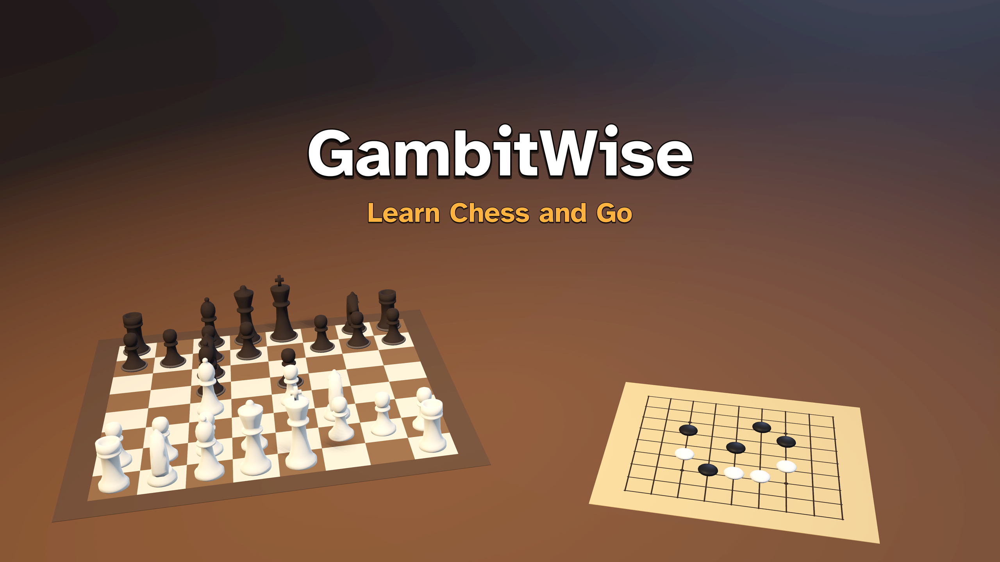
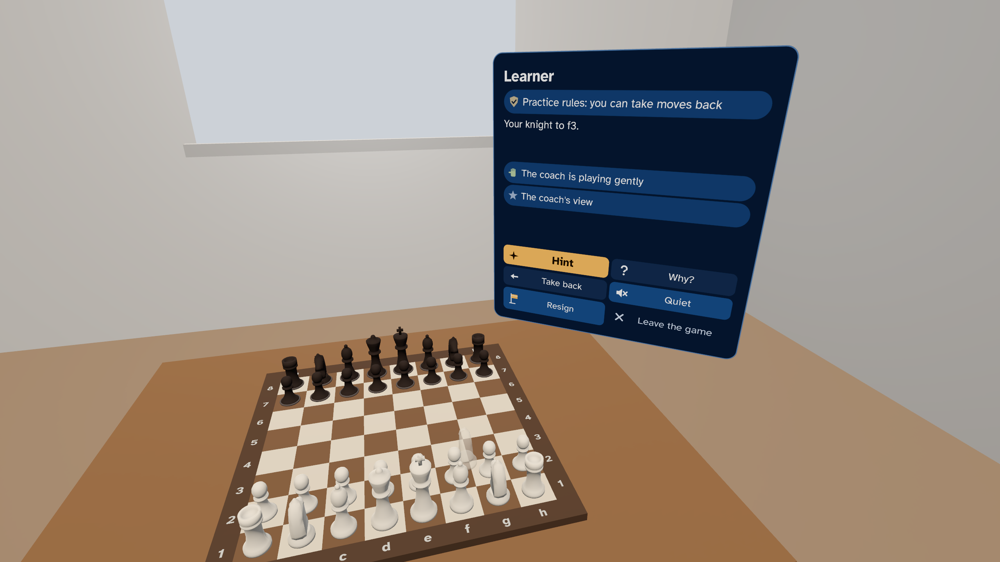
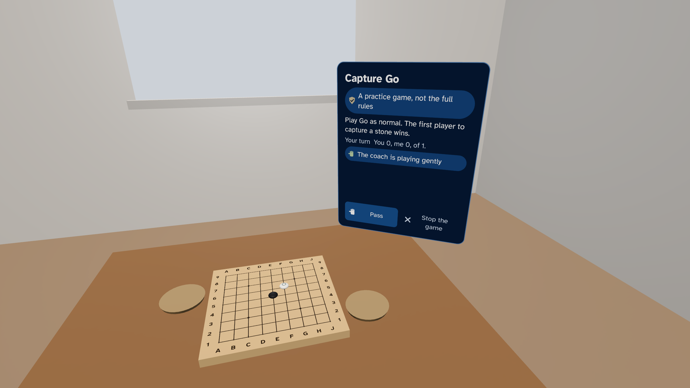
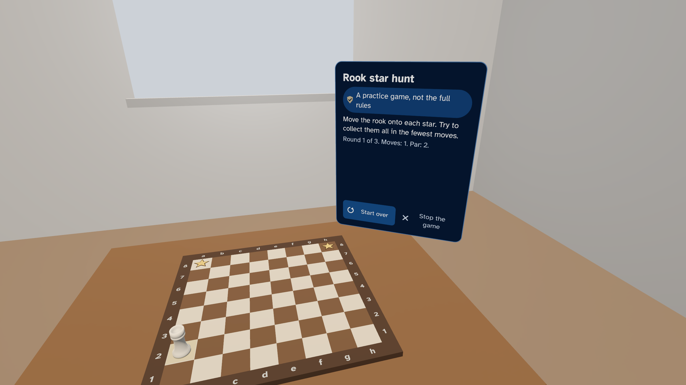

GambitWise: Learn Chess and Go

Learn chess and Go one small step at a time, with a spoken coach. Put the board on your real table in mixed reality, or play in a calm virtual room. 27 steps teach the rules with mini-games and puzzles. Then play the coach at five named levels, from First steps to Strong club, or pass the headset to a friend. Four reading depths go from short and simple to expert detail. For ages 10 and up. No ads, no chat, no accounts, no in-app purchases and no personal data collected.
Get GambitWise on the Meta Horizon Store
At a glance
| Fact | Detail |
|---|---|
| Price | Free |
| Headset | Meta Quest 3 |
| Ages | For ages 10 and up. |
| Where it is sold | The Meta Horizon Store |
| Internet | Not required to use the app |
| Mixed reality | Yes, optional. In mixed reality the board sits on your real table. Without it, you play in a calm virtual room. |
| Controls | Hands or Meta Quest Touch controllers |
| Players | Single player, Two players on one headset (pass the headset) |
| Comfort | Comfortable |
| Language | English (UK) |
| Ads, chat and in-app purchases | None. The app collects no personal data. |
| Developer | dav3studios |
Learn step by step
16 chess steps and 11 Go steps. The coach shows each idea with see-through ghosts, then you try it. 43 mini-games, like Capture Go and Mate in one, and 115 puzzles, each checked by our own rules and engines.
A coach that explains
A computer-generated British voice, with subtitles. Hints come in three steps: where to look, what kind of idea, then the move. Ask "Why?" about the last move. After a game, the coach can review up to three moments.
Play
Play the coach at five named levels, from First steps to Strong club. Gentle levels play weaker on purpose and say so. Chess, and Go on 9x9 and 13x13 boards. An optional chess clock. Or play a friend on one headset.
On your table
In mixed reality the board lies on your real table. Or it stands in a calm virtual room. Play seated, with hands or controllers. One hand is enough.
Clear and honest
Four reading depths, from Quick Look, which reads the lessons, the coach and the buttons aloud, to Expert. A label always says what you see: the full rules, a practice game or the coach's view. No ratings. Rule and history cards name their sources. 24 puzzles come from the Lichess puzzle database (CC0).
For families
Up to six explorers, pictures only, no names. Break reminders. An adult should supervise children's play. If you are unwell or have an eye or skin infection or head lice, do not share the headset. No ads, no chat, no accounts, no in-app purchases and no personal data collected. Plays offline.
Features
- 16 chess steps and 11 Go steps, each at four reading depths
- 43 mini-games and 115 puzzles, each checked by our own rules and engines
- A spoken coach with subtitles, three-step hints, "Why?" and a short game review
- Five named opponent levels, for chess, Go on 9x9 and Go on 13x13
- An optional chess clock
- Friend games on one headset
- Mixed reality on your real table, or a calm virtual room
- Seated play with hands or controllers, and one hand is enough
- No ads, no chat, no accounts, no in-app purchases and no personal data collected
Pictures



More from dav3studios
- SpaceWise: The real solar system at its true size and in true time, with eight narrated journeys.
- BodyWise: A ride through the real human body, with blood cells at their real size.
- BeakerWise: 104 science experiments in biology, chemistry and physics on a virtual lab bench.
- EpochWise: 45 moments of history on the real land, under the sky computed for that date.
On this site
- Help and support
- Privacy policy
- Terms of use
- Credits: the people and works that the app uses, with their licences
GambitWise is made by dav3studios for Meta Quest. Get it on the Meta Horizon Store.